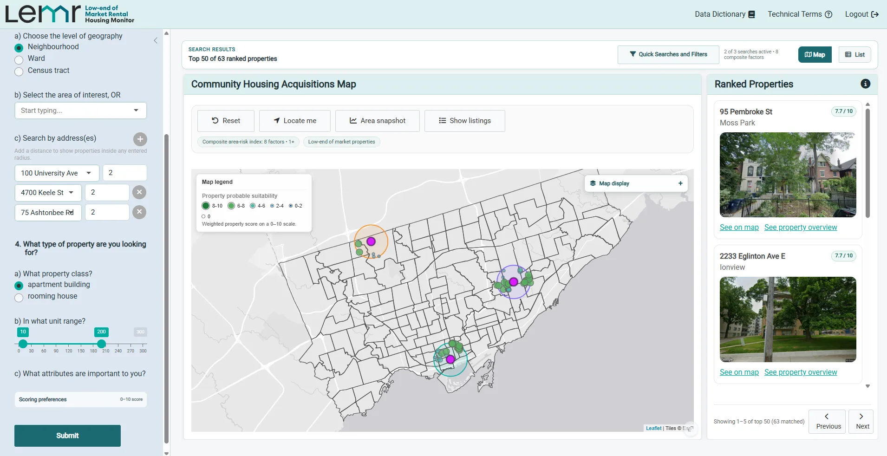

LEMR brings property, planning, housing-need, demographic, and market information into one acquisition-screening workspace for community housing providers.
This tool enables community housing providers to directly engage with real estate analytics software and to support identification of opportunities relevant to the community housing sector and to support decision making and funding application development. Teams can translate an acquisition strategy into a custom search, compare both listed and off-market opportunities, understand the context around a site, and export detailed reports for internal discussion.
This tool was developed through a collaboration between the Canadian Centre for Housing Rights (CCHR) and the Ontario Non-Profit Housing Association (ONPHA).
Example workflow
See how the Tool Works
Follow one example workflow, from search to report.
01
Define the opportunity
Complete a custom search
Specify property type, property size, and the strategic priorities that matter to your organization—for example, proximity to existing sites, preserving at-risk affordable housing, redevelopment potential, serving communities experiencing marginalization, or access to transit.
Choose a target neighbourhood, census tract, or ward, or search within a set distance of one or more addresses, such as properties already in your portfolio.
Set the geography, property requirements, and scoring preferences that define a strong fit.

An illustrative portfolio-based search using ONPHA offices, York University, and Centennial College as sample addresses.
02
Move from many to a shortlist
Browse and filter properties
Properties are filtered, scored, and ranked according to your inputs. Listed properties are identified alongside opportunities that are not currently on the market.
Review results in the ranked-property panel, inspect their location on the map, or switch to the list view for a more detailed comparison.
Ranked panelMap viewList viewListing status
Move between map and list views while keeping the same ranked search results in focus.
03
Understand what surrounds a site
Explore neighbourhood context and amenities
Adjust the map to show housing need, demographic patterns, and market trends. Build a composite indicator from the measures most important to your organization.
Add context layers such as transit, nearby non-profit land, and government-owned land, then zoom from citywide patterns to the blocks surrounding a candidate property.
Housing needDemographicsMarket trendsTransit & land
Layer transit, affordability, land ownership, and other indicators directly onto the opportunity map.
04
Bring site evidence together
Generate a property report
Create an exportable overview of a candidate property, including key site metrics, pricing and acquisition flags, amenities and maintenance information, land and zoning context, building evaluations, inspection history, recent permits, and aerial imagery.
Potential concerns and missing information are surfaced as prompts for follow-up, helping the team focus the next stage of due diligence.
Review site, building, inspection, permit, and zoning information in one consistent report.
05
See the broader acquisition context
Generate an area snapshot report
Summarize the selected neighbourhood or search area with a map and overview, the properties matching your criteria, and a demographic and socioeconomic profile.
The snapshot also brings in local real estate and development activity, lower-end-of-market rental trends, and residential building-permit information—useful context for comparing areas and briefing decision-makers.
Neighbourhood profileDemographicsMarket pressuresHousing need
Compare local demographics, development patterns, matching properties, and market context in one snapshot.
06
Return to recurring questions quickly
Apply filters or use pre-set Quick Searches
Build your own filter combinations or jump directly to high-value views. For example, highlight areas experiencing affordability pressure, map government and community-housing land, or focus on active listings.
Quick Searches create a consistent starting point for common acquisition questions while leaving the underlying filters open for refinement.
Examples of pre-set views that surface recurring, high-value acquisition questions.
What’s Next?
The tool is in the final stages of development and will be available soon.
We are preparing to use the tool in acquisition projects and partnering with community housing providers to better understand their acquisition processes and needs.
How to Support?
Help shape the tool by taking part in user testing or sharing your acquisition experience and interests.
We would like to hear from community housing providers about their acquisition processes and how the tool could support their work.
To get involved or learn more about the tool, please contact: